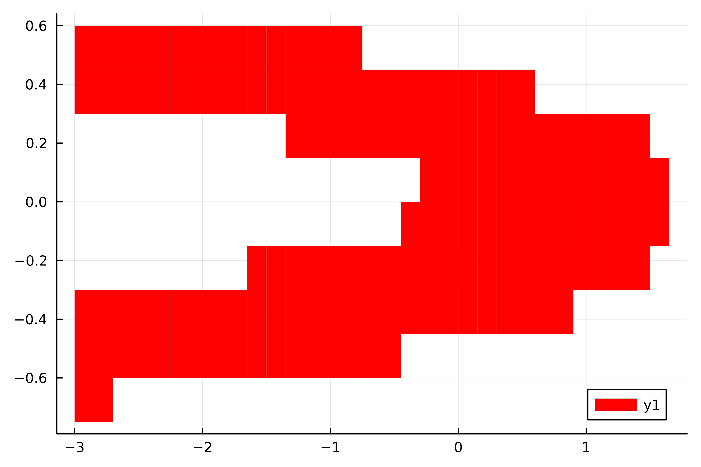
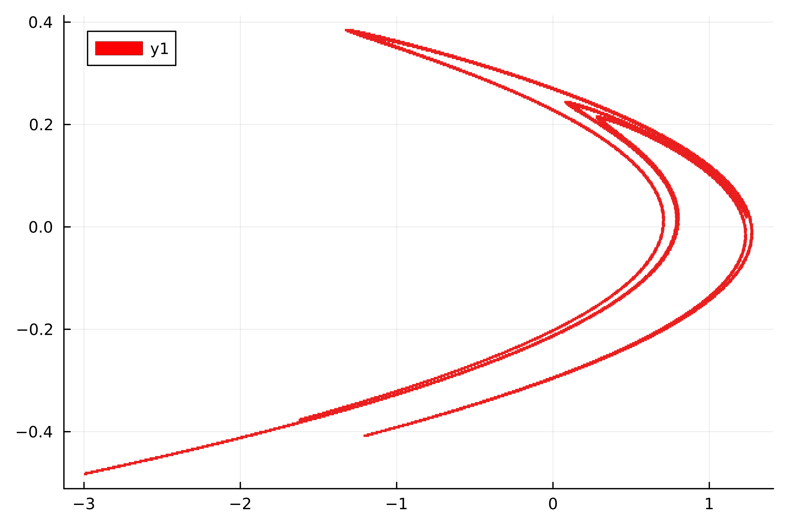

Limit Sets and Invariance
The $\omega$-limit set
The $\omega$-limit set describes the asymptotic behavior of trajectories based on some fixed starting points. It is the set which is reached after "infinite time". For some starting set $S$ in the domain $Q$, let $O^k (S) = \bigcup_{n \geq k} f^n (S)$ be the set $S$ at all times after $k$ iterations. Now,
\[\omega (S) = \bigcap_{k \geq 0} \overline{O^k (S)} . \]
By taking the intersection over all $k$, we are "stripping away" all finite-time behavior, leaving only the set which is maintained in infinite time.
Let us lift this definition onto the BoxMap F over some BoxLayout P and initial set S ⊂ P. We give P the discrete topology so that $\overline{O^k (S)} = O^k (S)$ and hence the $\omega$-limit set reduces to $\omega (S) = \bigcap_{k \geq 0} F^k (S)$. This can be easily iteratively obtained by
function my_ω(F, S)
Sₖ = S
Sₖ₊₁ = empty(S)
while Sₖ₊₁ ≠ Sₖ
Sₖ = Sₖ₊₁
Sₖ₊₁ = Sₖ ∩ F(Sₖ)
end
return Sₖ
endSince P is finite, this iteration must halt after finitely many steps.
using GAIO
# the Henon map
const a, b = 1.4, 0.3
f((x,y)) = (1 - a*x^2 + y, b*x)
cen, rad = (0, 0), (3, 3)
Q = Box(cen, rad)
P = BoxGrid(Q, (40,40))
F = BoxMap(f, P)
S = cover(P, :)
A = ω(F, S, subdivision=false)
using Plots
p = plot(A);
(Provided the BoxMap is accurate enough), this is now a covering of the original $\omega$-limit set. This is useful since we may now refine the BoxSet which was returned by ω(F, S), and run the iteration once more
function my_ω_with_subdivision(F, S, steps)
for _ in 1:steps
S = my_ω(F, subdivide(S))
end
return S
endA = ω(F, A, subdivision=true, steps=12)
p = plot(A);
In GAIO.jl this subdivision algorithm is built into ω via the subdivision kwarg, ω(F::BoxMap, S::BoxSet; subdivision = false). Moreover, the number of iterations can be capped using the steps kwarg.
GAIO.ω — Functionω(F::BoxMap, B::BoxSet; subdivision=true, steps=subdivision ? 12 : 64) -> BoxSetCompute the ω-limit set of B under F.
The $\alpha$-limit set
The $\alpha$-limit set is the "time-reversed" $\omega$-limit set
\[\alpha (S) = \bigcap_{k \geq 0} \overline{O^{-k} (S)} . \]
where $O^{-k} (S) = \bigcup_{n \geq k} f^{-n} (S)$ and $f^{-n} (A)$ is the preimage of $A$ under $f^n$. When we again lift this definition to BoxMaps, we arrive at $\alpha (S) = \bigcap_{k \geq 0} F^{-k} (S)$, so that the previous algorithms still work with $F^{-1}$ (the preimage function) replacing $F$,
function α(F, S)
F⁻¹(B) = preimage(F, B, B) # actually computes F⁻¹(B) ∩ B
return ω(F⁻¹, S) # which is all we need
endHere too, this is implemented in GAIO.jl with the subdivision and steps kwargs.
Invariant Sets
The $\omega$-limit set has the property that
\[f^{-1} (\omega(S)) = \omega(S) . \]
Analogously, the $\alpha$-limit set satisfies
\[f (\alpha(S)) = \alpha(S) . \]
Other sets which satisfy such conditions are called backward (resp. forward) invariant. A set which is both backward and forward invariant is just called invariant.
An exercise shows that $\omega(S)$ (resp. $\alpha(S)$) is in fact the largest subset of $S$ which is backward (resp. forward) invariant. For this reason, the synonyms
maximal_backward_invariant_set = ω
maximal_forward_invariant_set = αare made available in GAIO.jl. For historical reasons [7], the synonym
relative_attractor = ωis also available.
Finally, after reading through the above algorithms the reader likely already has an idea for how to compute the maximal invariant subset of $S$,
function maximal_invariant_set(F, S)
G(B) = F(B) ∩ preimage(F, B, B) # computes F⁻¹(B) ∩ B ∩ F(B)
return ω(G, S)
endOf course, the kwargs subdivision and steps are available here as well.
GAIO.α — Functionω(F::BoxMap, B::BoxSet; subdivision=true, steps=subdivision ? 12 : 64) -> BoxSetCompute the α-limit set of B under F.